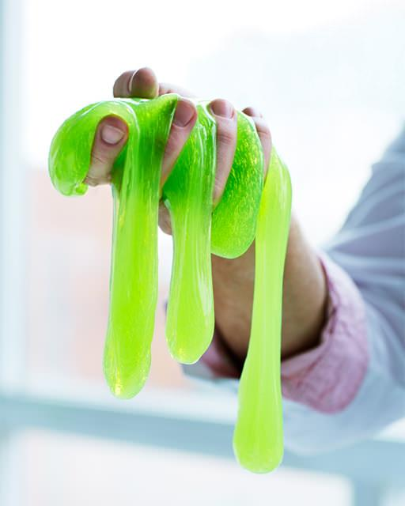

<DOCTYPE! html>
<html lang="en">
<body background="
<head>
  <meta charset="utf-8">
  <title>Basic html Content Page</title>
  <link rel="stylesheet" type="text/css" href="CSS-Template.css">
  <style>section
	{
		float: left;
		width: calc(80% - 100px);
		margin: 0 50px 50px 50px;
	}
	</style>
</head>
<body class="hello">
  <header>
    <h1>Andi's Science Project</h1>
	<h2>This easy project will teach the kids how to make slime.</h2>
  </header>
  <nav>

    <ul>
	  <li><a href="HTML-HomePage.html">Home</a></li>
	  <li><a href="HTML-ContentPage.html">Content</a></li>
	  <li><a href="HTML-VideoPage.html">Videos</a></li>
	  <li><a href="HTML-LinksPage.html">Links</a></li>
    </ul>
  </nav>
  <section>
    The materials you need.
    <header> The materials you need to make slime are: 1 cup of glue, 1 tablespoon of baking soda, food coloring, contact lens solution.</header>
    <article> 
	
	 
	</article> 
	Instructions, on how to make slime!<br/><br>
    <footer>
		<ol type="1" style="text-align: left">
	        <li>Pour 1 cup glue into a bowl.</li>
            <li>Add 1 tablespoon of baking soda.</li>
            <li>Add three drops of food coloring (optional).</li>
            <li>Mix well.</li>
            <li>Add 1 tablespoon of contact lens solution.</li>
            <li>Mix well.</li>
            <li>Continue to add a tablespoon of contact lens solution and mixing until you get a nice consistency.
			<li> And you are done.
			</li></footer>
  </section>
  <footer>
   Contact info:<a href="mailto:andrixhafkollari@gmail.com" target="_top">Andrixhafkollari@gmail.com</a>
	<br>Phone Number: (904)-482-5464 .
  </footer>
</body>
</html>